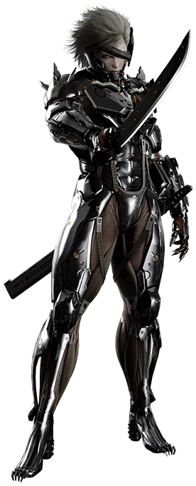
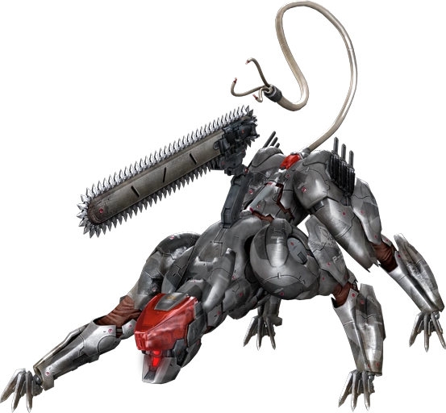
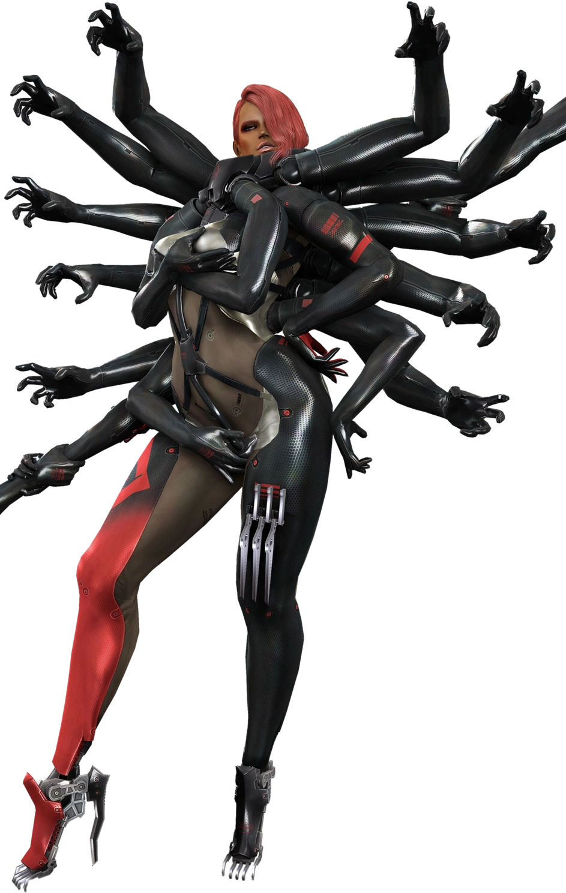
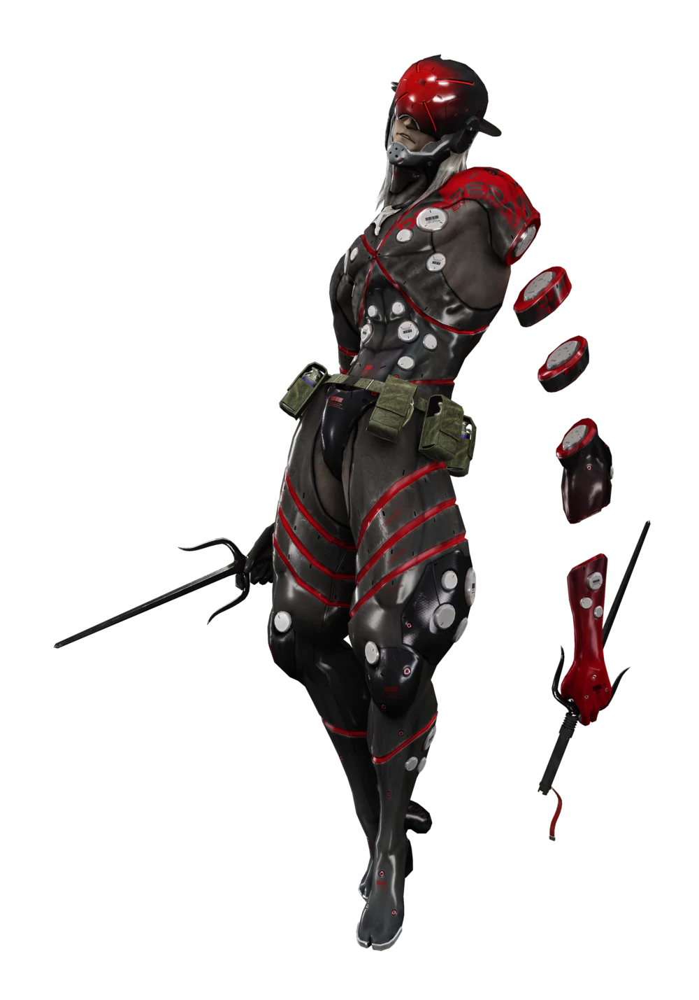
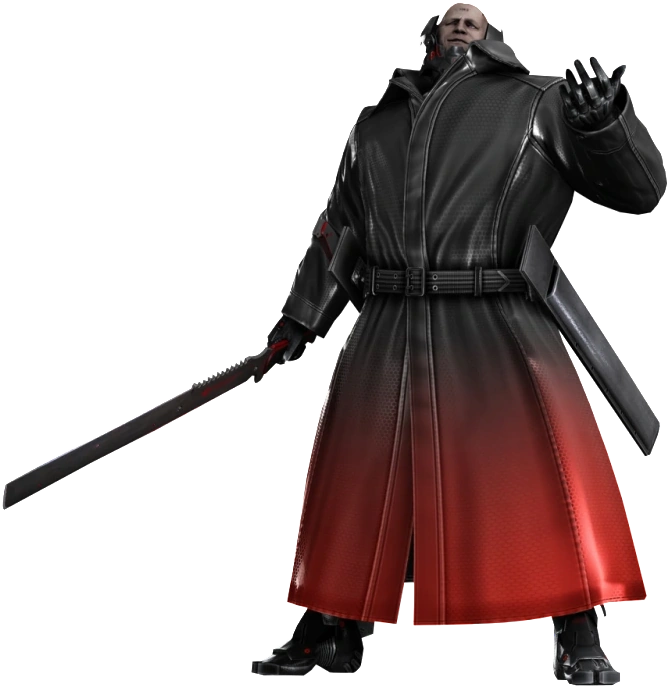
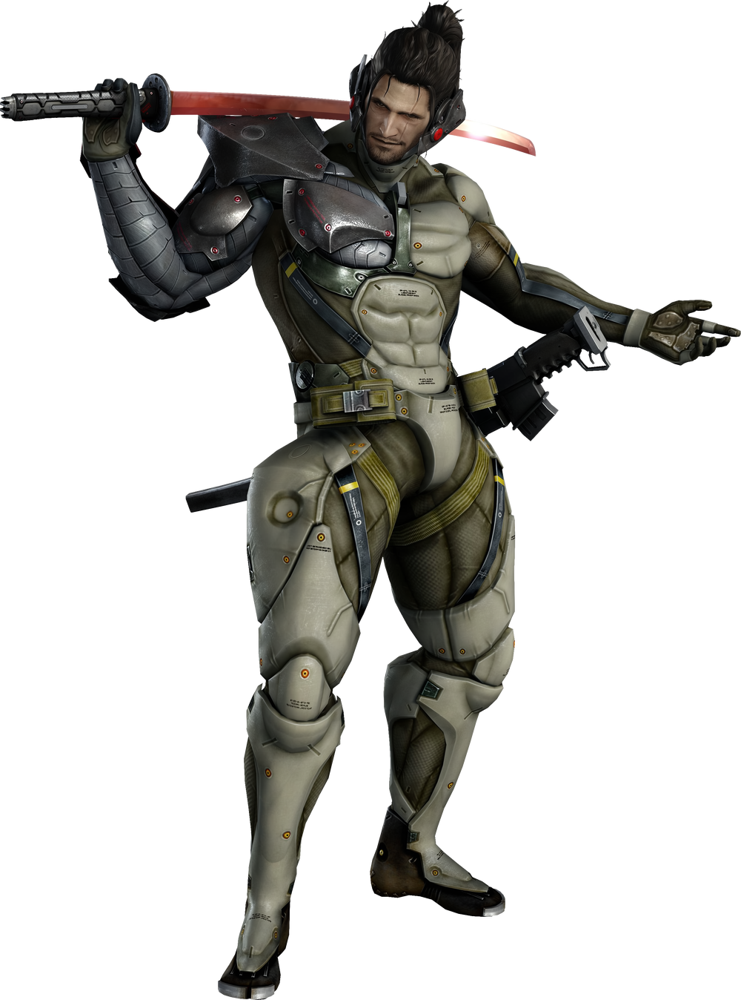
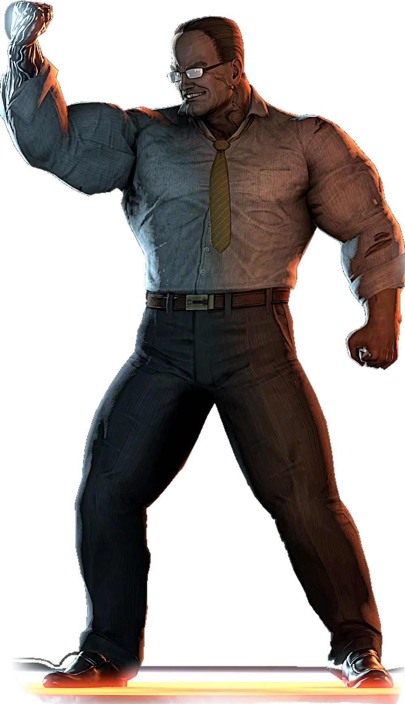

Raiden

Raiden (雷電?), nome verdadeiro Jack, também conhecido como Jack, o Estripador, Diabo Branco e Cobra, foi um mercenário liberiano-americano e ex-soldado das forças especiais. Anteriormente uma criança-soldado sob o comando de Solidus Snake, Raiden foi mais tarde selecionado pelos Patriots para testar o Plano S3 na Big Shell, como um novo recruta para a unidade reformada FOXHOUND. Mais tarde, ele trabalhou ao lado do Exército do Paraíso Perdido em suas atividades anti-Patriota, mas foi capturado e forçado a passar por pesadas experiências cibernéticas. Depois de escapar com sucesso, Raiden passou a ajudar Solid Snake durante o Incidente do Guns of the Patriots. Em 2018, Raiden tornou-se membro da Maverick Security Consulting, Inc., realizando diversas tarefas enquanto arrecadava dinheiro para sua família. No entanto, durante uma missão de escolta na África, eles foram atacados pela Desperado Enforcement LLC., que matou o protegido de Raiden, N'mani, e deixou Raiden como morto. Felizmente, ele foi salvo pelo cientista Wilhelm Voigt e trabalhou com Maverick para lutar contra o Desperado. A obsessão vingativa de Raiden por Desperado tornou-se pessoal quando ele descobriu durante uma missão no México que Desperado e World Marshal Inc. haviam sequestrado várias crianças, removido cirurgicamente seus cérebros para colocá-los em corpos cibernéticos e planejavam submetê-los a um treinamento de RV inspirado no seu próprio. . Raiden então renunciou ao Maverick para perseguir e recuperar os casos cerebrais das crianças do World Marshal no Colorado.
Blade Wolf

Blade Wolf é o deuteragonista do videogame Metal Gear Rising: Revengeance de 2013, bem como um antagonista coadjuvante no DLC Jetstream Sam e o principal protagonista de seu próprio DLC. Ele é oficialmente designado IF Prototype LQ-84i, (IF significa "Interface"), também conhecido como Wolf, e uma vez referido informalmente como K-9000 por Kevin Washington. Ele é um robô quadrúpede com uma neuro-AI óptica de aprendizagem e um protótipo de interface verbal, semelhante à forma de besta do Lobo Chorão. Os sistemas de armas conhecidos incluíam uma motosserra presa às costas que poderia ser usada para cortar oponentes, facas HF com mola, uma arma ferroviária, bem como garras extensíveis. Sua cauda também agia como um braço manipulador semelhante ao das unidades Gekko. Também existiam engrenagens não tripuladas semelhantes, chamadas Fenrirs, aparentemente sendo modelos produzidos em massa do LQ-84i. Os projetos do LQ-84i foram baixados para Raiden, um agente da PMSC Maverick Security Consulting, Inc., durante ou antes de ser gravemente ferido em uma missão. Mais tarde, Maverick recuperou o arquivo cluster através do braço de Raiden, embora eles não apenas precisassem inserir uma senha para contornar o processo de criptografia, mas também ativar um sistema de substituição no processo.
Mistral

Mistral, também se referindo como o Vento Frio da França, é uma grande antagonista no videogame Metal Gear Rising: Revengeance e a principal antagonista de seu DLC Bladewolf. Ela é uma ninja ciborgue membro da Desperado Enforcement LLC, além de ser a única mulher. Foi ela também quem treinou o IF Prototype LQ-84i K-9000 durante seu tempo como membro não oficial do Desperado Antes dos acontecimentos em Rising, Mistral ficou órfã de sua família francesa/africana ainda jovem durante a Guerra Civil Argelina da década de 1990. Ela rapidamente serviu a Legião Estrangeira Francesa na tentativa de se vingar das pessoas que mataram sua família. Isso a levaria a assassinar incontáveis guerras no Iraque e no Afeganistão e logo ela rapidamente se cansaria delas. Seus ideais mudariam quando ela conhecesse o senador Armstrong e isso a convenceu a ingressar no World Marshal.
Monsoon

Monsoon, também conhecido como "Vento do Sudeste Asiático", é um dos Ventos da Destruição de Desperado e um grande antagonista no videogame Metal Gear Rising: Revengeance, bem como o antagonista secundário de seu DLC Jetstream Sam. Os detalhes do passado de Monsoon são um tanto vagos, no entanto, sabe-se que ele conseguiu sobreviver em Phnom Penh, durante o reinado de terror do Khemer Vermelho e nos Campos da Morte. Isso deu a Monsoon sua visão do mundo e ele acabou se juntando a uma organização criminosa cambojana que aparentemente estava envolvida com drogas e tráfico de pessoas. Depois de ser pego em um tiroteio de gangue e gravemente ferido, Monsoon foi reconstruído com um corpo ciborgue. Ele então se juntou ao PMC, Desperado.
Sundowner

Sundowner, também conhecido como Californian Wildfire, é um dos dois antagonistas secundários (ao lado de Jetstream Sam) do videogame Metal Gear Rising: Revengeance. Ele é o líder da PMC Desperado Enforcement LLC que busca iniciar uma guerra sem nenhum motivo além de simplesmente desfrutar da morte, destruição e carnificina que ela causa. Sundowner veio de uma família pobre no Alabama e se saiu bem na escola, mas não tinha condições de frequentar a faculdade. Assim, ele ingressou no exército, participando de inúmeros conflitos, como a invasão do Panamá pelos EUA, a Guerra do Golfo e a Guerra do Iraque. Sundowner deixou o exército em 2008 para servir em PMCs e era conhecido por seu hábito de deixar sangue de seus inimigos por toda parte para se assemelhar a um pôr do sol, o que lhe valeu o codinome de Sundowner. Sundowner também enfrentou um breve período em que foi mantido fora do campo de batalha após ser danificado por um IED, mas retornou com um corpo ciborgue. Ele foi investigado pelo Exército dos EUA por participar de crimes de guerra em mais de uma ocasião, mas nunca foi condenado. Depois que o SOP foi encerrado em 2014, causando uma crise na economia de guerra, Sundowner ficou irritado, pois sentia que manter a guerra era o seu único meio de ganhar a vida. Em algum momento de 2018, Sundowner reativou o protótipo LQ-84i, aparentemente achando divertida uma máquina mais preocupada com os seres humanos do que com seus aliados.
Jetstream Sam

Jetstream Sam ou Samuel Rodrigues é um vilão do videogame Metal Gear Rising: Revengeance de 2013. No jogo, ele é um mercenário ciborgue e mestre espadachim, descendente de uma longa linhagem de espadachins. Ele às vezes é acompanhado por uma máquina mecânica semelhante a um cachorro conhecida como IF Prototype LQ-84i ou Blade Wolf. Jetstream Sam é apresentado em Metal Gear Rising: Revengeance de 2013. O pai de Jetstream Sam era responsável por um dojo brasileiro de Kenjutsu, onde ensinava a arte da “espada assassina”. Sam herdou sua espada de seu pai. Depois que seu pai é morto por um de seus alunos, supostamente em relação a um cartel brasileiro, Sam sai do Brasil, treina e volta para matar o aluno, deixando então o Brasil para sempre para se tornar um mercenário, eliminando vários cartéis depois. Em MGRR, Sam é contratado por Steve Armstrong após acabar com vários cartéis. Armstrong o submeteu a vários testes, incluindo a retirada de um protótipo LQ-84i e um Metal Gear RAY. Armstrong pede a ajuda de Sam para acabar com a "guerra como negócio", mas Sam recusa. Os dois brigam mas Sam acaba perdendo a mão direita e admite a derrota, juntando-se a Armstrong e sua companhia World Marshal. Sua mão é substituída por uma prótese.
Armstrong

O senador Steven Armstrong é o principal antagonista do videogame Metal Gear Rising: Revengeance de 2013 e seu DLC Jetstream Sam. Ele é um ambicioso senador do Colorado que planeja ser eleito o próximo presidente dos EUA para poder converter o país em um regime social darwinista que ele acredita que permitiria a cada cidadão travar suas próprias guerras e por aquilo em que realmente acreditam. Com uma altura imponente de 2 metros (6'7 "), Armstrong é um titã de indivíduo, com um físico incrivelmente musculoso. Ele é um homem imponente, caucasiano, de meia-idade, com cabelo preto contendo traços de branco e cinza. O traje principal de Armstrong parece ser composto principalmente por um terno escuro listrado vertical usado sobre uma camisa branca, bem como calças escuras para combinar com sua roupa política. Ele também usa um distintivo de lapela em seu terno no formato da bandeira do Estados Unidos da América. Quando Armstrong atinge seu estado de poder nanite, Armstrong passa por mudanças físicas consideráveis. Em seu estado fortalecido, a estrutura muscular de Armstrong aumenta substancialmente a ponto de sua camisa se rasgar completamente, revelando sua constituição impressionante. Seu corpo traz muitas cicatrizes, devido ao procedimento de implantação das nanomáquinas em seu corpo. Devido às nanomáquinas que o capacitam, seu corpo fica repleto de energia, cobrindo-o com uma aura poderosa, que também funciona como uma camada de defesa.